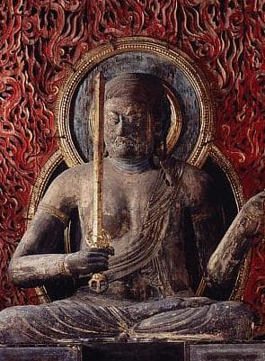

仏像ギャラリー
 阿弥陀如来
阿弥陀如来
平等院鳳凰堂の堂内には、ご本尊である阿弥陀如来坐像が静かに鎮座しています。 平安時代、宮廷や藤原摂関家の御用を務めた、当代随一の仏師・定朝（じょうちょう）が 手掛けた仏像で、現存する唯一の作例として知られています。極めて貴重な遺品であり、国宝に指定されています。
 不動明王東寺・御影堂に安置される不動明王像は、弘法大師空海の念持仏と伝えられる秘仏で、日本最古級の不動明王像として国宝に指定されています。 怒りの姿で現れる不動明王は、大日如来の化身とされ、右手に剣、左手に縄、背に火焔を背負い、迷える衆生を救済します。その厳しい表情の中に、 深い慈悲が宿っています。 東寺は京都市南区にある真言宗の総本山で、世界遺産に登録され、多くの国宝を所蔵しています。
 弥勒菩薩
弥勒菩薩
字を打つ